‘fasstr’, the Flow Analysis Summary Statistics Tool for R, is a set of R functions to prepare, summarize, analyze, trend, and visualize streamflow data. This package summarizes continuous daily mean streamflow data into various daily, monthly, annual, and long-term statistics, completes trending and frequency analyses, with outputs in both table and plot formats.
This vignette documents the usage of the many functions and arguments provided in ‘fasstr’. This vignette is a high-level adjunct to the details found in the various function documentations (see help(package = "fasstr") for documentations). You’ll learn how to install the package and a HYDAT database, input data into ‘fasstr’ functions, add relevant columns and rows to daily data, screen data for outliers and missing dates, calculate and visualize various summary statistics, trend annual flows, and complete volume frequency analyses.
This guide contains the following sections to help understand the usage of the ‘fasstr’ functions and arguments:
- Getting Started
- Flow Data Inputs
- Function Outputs
- Data Cleaning (
fill_*andadd_*functions) - Data Screening (
screen_*functions) - Calculating Statistics (
calc_*functions) - Analyses (
compute_*functions) - Customizing Functions - Data filtering and options
- Writing Tables and Plots (
write_*functions)
1. Getting Started
Installing and loading fasstr
You can install ‘fasstr’ using the following code. It may take a few moments as there are several dependency packages will also be installed, including ‘tidyhydat’ for downloading Water Survey of Canada hydrometric data, ‘zyp’ for trending, ‘ggplot2’ for creating plots, and ‘dplyr’ and ‘tidyr’ for various data wrangling and summarizing functions, amongst others.
install.packages("fasstr")
To install the development version of the ‘fasstr’ package, you need to install the remotes package then the ‘fasstr’ package.
if(!requireNamespace("remotes")) install.packages("remotes") remotes::install_github("bcgov/fasstr")
To call ‘fasstr’ functions you can either load the package using the library() function or access a specific function using a double-colon (e.g. fasstr::calc_daily_stats()). ‘fasstr’ exports the pipe, %>%, so it can be used for tidy workflows. For this vignette, the ‘dplyr’ package will also be used.
Downloading HYDAT
To use the station_number argument of the ‘fasstr’ functions, you will need to download a HYDAT database to your computer using the following ‘tidyhydat’ function. The function will save the database on your computer and know where to find it each time you open R or RStudio. Due to the size of the database, it will take several minutes to download.
tidyhydat::download_hydat()
As HYDAT is updated frequently you may want to periodically update it yourself using the function above. You can check the local version using the following code:
tidyhydat::hy_version()
2. Flow Data Inputs
All functions in ‘fasstr’ require a daily mean streamflow dataset from one or more hydrometric stations. Long-term and continuous datasets are preferred for most analyses, but seasonal and partial data can be used. Note that if partial dataset are used, NA’s may be produced for certain statistics. Please see the ‘Handling Missing Dates’ section in Section 8 for more information. Data is provided to each function using one of the following arguments:
-
data, as a data frame, or -
station_number, as a list of Water Survey of Canada HYDAT station numbers.
‘data’ (and dates, values, and groups)
Using the data option, a data frame of daily data containing columns of dates (YYYY-MM-DD in date format), values (mean daily discharge in cubic metres per second in numeric format), and, optionally, grouping identifiers (character string of station names or numbers) is called. By default the functions will look for columns identified as ‘Date’, ‘Value’, and ‘STATION_NUMBER’, respectively, to be compatible with the HYDAT default columns. However, columns of different names can be identified using the dates, values, groups column arguments (ex. values = Yield_mm). The values of these arguments are not required to be surrounded by quotes; both "Date" and Date will provide the appropriate column called “Date”. The following is an example of an appropriate data frame with default column names (STATION_NUMBER not required):
STATION_NUMBER Date Value
1 08NM116 1949-04-01 1.13
2 08NM116 1949-04-02 1.53
3 08NM116 1949-04-03 2.07
4 08NM116 1949-04-04 2.07
5 08NM116 1949-04-05 2.21
6 08NM116 1949-04-06 2.21The following is an example ‘fasstr’ function arguments if your daily data data frame has the default columns names (no need to list them):
calc_longterm_daily_stats(data = flow_data)
The following is an example if your daily data data frame has non-default columns names of “Stations”, “Dates”, and “Flows”:
calc_longterm_daily_stats(data = flow_data, dates = Dates, values = Flows, groups = Stations)
The data argument is listed first in the list of arguments for each function, so the data frame can be passed onto other functions using the pipe operator, %>%, in a tidy workflow.
‘station_number’
Alternatively, you can directly extract flow data directly from a HYDAT database by listing station numbers in the station_number argument while leaving the data arguments blank. Data frames from HYDAT also include ‘Parameter’ and ‘Symbol’ columns. The following is an example of listing stations:
calc_longterm_daily_stats(station_number = "08NM116") calc_longterm_daily_stats(station_number = c("08NM116", "08NM242"))
This package allows for multiple stations (or other groupings) to be analyzed in many of the functions; provided they are identified using the groups column argument (defaults to STATION_NUMBER). If named grouping column doesn’t exist or is improperly named then all values listed in the values column will be summarized.
3. Function Types and Outputs
‘fasstr’ provides various functions to help in streamflow analyses. They can be generally categorized into the following groups (with more details in the sections below):
- data cleaning (to prepare data for analyses;
add_*andfill_*functions), - data screening (to look for outliers and missing data;
screen_*functions), - calculating summary statistics (long-term, annual, monthly and daily statistics;
calc_*functions), - computing analyses (volume frequency analyses and trending;
compute_*functions), - visualizing (plotting the various statistics;
plot_*functions), and - writing (to save your data and plots;
write_*functions)
Tibble Data Frames
Functions that produce tables create them as tibble data frames. To facilitate the writing of the ‘fasstr’ tibbles to a directory as .csv, .xls, or .xlsx files with some functionality of rounding digits, the write_results() function can be used (see section 9 for more information).
ggplot2 Plots
Functions that produce plots create them as lists of ‘ggplot2’ objects. The use of ‘ggplot2’ plots allows for further customization of plots for the user (axis titles, colours, etc.). All plotting functions produce lists to be consistent with table naming conventions of ‘fasstr’, allow multiple plots to be created with one function, and to easily allow the saving of multiple plots to a directory. To assist with the saving of lists of plots, a provided function called write_plots() will directly save the list of plots within a directory or single PDF document, with the ‘fasstr’ plot objects names (see section 9 for more information). Individual plots can be subsetted from their lists using either the dollar sign, $ (e.g. one_plot <- plots$plotname), or double square brackets, [ ] (e.g. one_plot <- plots[[plotname]] or one_plot <- plots[[1]]).
Some functions produce both tibbles and plots as lists, and can be subsequently subsetted as desired.
4. Data Cleaning Functions
There are several functions that are used to prepare your flow dataset for your own analysis. These functions start with add_ or fill_ and add columns or rows, respectively, to your flow data frame. These functions include:
-
fill_missing_dates()- fills in missing dates or dates with no flow values with NA -
add_date_variables()- add year, month, and day of year variables (and water years if selected) -
add_seasons()- add a columns of seasons -
add_rolling_means()- add rolling n-day averages (e.g. 7-day rolling average) -
add_basin_area()- add a basin area column to daily flows -
add_daily_volume()- add daily volumetric flows (in cubic metres) -
add_daily_yield()- add daily volumetric runoff yields (in millimetres) -
add_cumulative_volume()- add daily cumulative volumetric flows on an annual basis (in cubic metres) -
add_cumulative_yield()- add daily cumulative runoff yield flows on an annual basis (in millimetres)
The functions are set up to easily incorporate the use of the pipe operator, like the following:
fill_missing_dates(station_number = "08HA011") %>% dplyr::select(Date, Value) %>% # keeps just the Date and Value columns add_date_variables() %>% add_rolling_means(roll_days = 7)
# A tibble: 21,550 x 8
Date Value CalendarYear Month MonthName WaterYear DayofYear Q7Day
<date> <dbl> <dbl> <dbl> <fct> <dbl> <dbl> <dbl>
1 1960-01-01 62.9 1960 1 Jan 1960 1 NA
2 1960-01-02 58 1960 1 Jan 1960 2 NA
3 1960-01-03 54.9 1960 1 Jan 1960 3 NA
4 1960-01-04 51.3 1960 1 Jan 1960 4 NA
5 1960-01-05 47.3 1960 1 Jan 1960 5 NA
6 1960-01-06 46.7 1960 1 Jan 1960 6 NA
7 1960-01-07 43.9 1960 1 Jan 1960 7 52.1
8 1960-01-08 41.9 1960 1 Jan 1960 8 49.1
9 1960-01-09 40.8 1960 1 Jan 1960 9 46.7
10 1960-01-10 38.5 1960 1 Jan 1960 10 44.3
# ... with 21,540 more rowsFilling missing dates
To ensure that analyses do not skip over dates, the fill_missing_dates() function looks for gaps in dates and adds the dates and fills in the flow values with NA. It does not do any gap filling (linear or correlations, for example), it assigns missing flow values with a value of NA. It also fills dates to create complete start and end years. For example, if data starts in April, all flow values starting from January will be filled with NA. The timing of the year depends on the water_year_start argument. When water_year_start if left blank, it will fill to complete calendar years (Jan-Dec). If is set to another month (numeric) then it will fill to complete water years of years with a different starting month as selected with water_year_start.
Run and compare the following lines to see how missing dates are filled:
# Very gappy (early years): tidyhydat::hy_daily_flows(station_number = "08NM116") # Gap filled with NA's tidyhydat::hy_daily_flows(station_number = "08NM116") %>% fill_missing_dates()
It is ideal to fill missing dates before using other add_* functions so dates added are not missing the other new values.
Adding date variables and seasons
The add_date_variables() function adds useful dates columns for summarizing data. The function defaults include ‘Year’ (calendar year), ‘Month’ (numeric), ‘MonthName’ (month abbreviation; e.g. Jan), ‘WaterYear’ (year based on selected water_year_start), and ‘DayofYear’ (the day of year based on selected water_year_start from 1-365). The month of the start of the water year is chosen using the water_year_start argument, which defaults to “1” for January.
Run and compare the following lines to see how the date columns are added:
# Just calendar year info add_date_variables(station_number = "08NM116") # If water years are require starting August (use month number) add_date_variables(station_number = "08NM116", water_year_start = 8)
The add_seasons() function adds a column of seasons identifiers called “Season”. The length of seasons, in months, is provided using the seasons_length argument. As seasons are grouped by months the length of the seasons must be divisible into 12 with one of the following season lengths: 1, 2, 3, 4, 6, or 12 months. The start of the first season coincides with the start month of each year; ‘Jan-Jun’ for 6-month seasons starting with calendar years or ‘Dec-Feb’ for 3-month seasons starting with water year starting in December. Run and compare the following lines to see how seasons columns are added:
# 2 seasons starting January add_seasons(station_number = "08NM116", seasons_length = 6) # 4 seasons starting October add_seasons(station_number = "08NM116", water_year_start = 10, seasons_length = 3) # 4 Seasons starting December add_seasons(station_number = "08NM116", water_year_start = 12, seasons_length = 3)
Adding rolling means
Adding rolling means (running means or averages) of daily data, can be done using the add_rolling_means() functions. Based on the selected “n” rolling days using the roll_days argument, a column for each “n” will be added. One rolling mean column can be added by listing one number (e.g. roll_days = 7) or multiple columns can be added by listing each one (e.g. roll_days = c(3,7,30)). Each column will be named “Q’n’Day” where n is the number (eg. Q7Day or Q30Day).
Where the alignment of the rolling mean is compared to the date is important to know when analyzing data. The alignment, using the roll_align argument, determine the date at which the rolling means occur.
-
roll_align = "right"- the date will have the mean of that date’s flow value and the previous n-1 days -
roll_align = "left"- the date will have the mean of that date’s flow value and the next n-1 days -
roll_align = "center"- odd numbered
roll_days- date will have the mean of that date’s flow value and half of n-1 days before and half of n-1 days after - even numbered
roll_days- date will have the mean of that date’s flow and half of n days after, and the remaining before ((n/2)-1 days before the date) (i.e. the first of the middle two dates)
- odd numbered
Odd roll_days example (column headers have alignment direction added):
# A tibble: 6 x 5
Date Value Q5Day_left Q5Day_center Q5Day_right
<date> <dbl> <dbl> <dbl> <dbl>
1 1960-01-01 62.9 54.9 NA NA
2 1960-01-02 58 51.6 NA NA
3 1960-01-03 54.9 48.8 54.9 NA
4 1960-01-04 51.3 46.2 51.6 NA
5 1960-01-05 47.3 44.1 48.8 54.9
6 1960-01-06 46.7 42.4 46.2 51.6Even roll_days example:
# A tibble: 6 x 5
Date Value Q6Day_left Q6Day_center Q6Day_right
<date> <dbl> <dbl> <dbl> <dbl>
1 1960-01-01 62.9 53.5 NA NA
2 1960-01-02 58 50.4 NA NA
3 1960-01-03 54.9 47.7 53.5 NA
4 1960-01-04 51.3 45.3 50.4 NA
5 1960-01-05 47.3 43.2 47.7 NA
6 1960-01-06 46.7 41.5 45.3 53.5Adding basin areas
To add a column of basin areas, for viewing or analyzing, the add_basin_area() function can be used. The basin area will be extracted from HYDAT, if available, under two conditions where the basin_area argument can be left blank:
- if the
station_numberargument is used - if your
datadata frame has a grouping column of HYDAT station numbers
If you would like to apply your own basin area size(s) or override the HYDAT areas, you use the basin_area argument in the following ways:
- for a single station or applying to all stations, list a single number (i.e.
basin_area = 800) - for different areas for multiple stations, you list each basin area for each station (i.e.
basin_area = c("08NM116" = 800, "08NM242" = 4))
Run and compare the following lines to see how basin area columns are added:
# Using the station_number argument or data frame as HYDAT groupings add_basin_area(station_number = "08NM116") # Using the basin_area argument add_basin_area(station_number = "08NM116", basin_area = 800) # Using the basin_area argument with multiple stations add_basin_area(station_number = c("08NM116","08NM242"), basin_area = c("08NM116" = 800, "08NM242" = 4))
Adding daily volumetric or yield flows
Converting daily mean discharge into other units can be useful for different analyses. Columns of total discharge converted from daily mean into volumetric flows, named “Volume_m3” in cubic metres per second, or runoff yield, named “Yield_mm” in millimetres can be used using the add_daily_volume() and add_daily_yield() functions, respectively. Volumetric gives the total volume per day, and the yield gives the total water depth, provided an upstream drainage basin area is provided. Basin area can be provided using the basin_area argument, or if there is a groups column of HYDAT station numbers in your data then it will automatically be extracted from HYDAT, if available. (see `adding basin areas above or section 8 for more information).
# Add a column of converted discharge (m3/s) into volume (m3) add_daily_volume(station_number = "08NM116") # Add a column of converted discharge (m3/s) into yield (mm), with HYDAT station groups add_daily_yield(station_number = "08NM116") # Add a column of converted discharge (m3/s) into yield (mm), with setting the basin area add_daily_yield(station_number = "08NM116", basin_area = 800)
Adding annual cumulative daily volumetric or yield flows
These functions create a rolling cumulative of daily total flows on an annual basis, as volumetric flows, named “Cumul_Volume_m3” in cubic metres per second, or runoff yield flows, named “Cumul_Yield_mm” in millimetres. A total flow for a given a day is the sum of all previous days and that day, within a given year (Jan 15 cumulative flow value is the sum of all total flows from Jan 1-15). It restarts for each year (selected calendar or water year) and no values are calculated if there is missing data for a given year as the total for a given year cannot be determined.
# Add a column of cumulative volumes (m3) add_cumulative_volume(station_number = "08NM116") # Add a column of cumulative yield (mm), with HYDAT station number groups add_cumulative_yield(station_number = "08NM116") # Add a column of cumulative yield (mm), with setting the basin area add_cumulative_yield(station_number = "08NM116", basin_area = 800)
Pipelines
By utilizing the ‘data’ argument as the first one list, it enables the user to work with the cleaning functions within a tidy ‘pipeline’ as seen below.
fill_missing_dates(station_number = "08NM116") %>% add_date_variables(water_year_start = 9) %>% add_seasons(seasons_length = 3) %>% add_rolling_means() %>% add_basin_area() %>% add_daily_volume() %>% add_daily_yield() %>% add_cumulative_volume() %>% add_cumulative_yield()
# A tibble: 25,202 x 19
STATION_NUMBER Date Parameter Value Symbol CalendarYear Month MonthName
<chr> <date> <chr> <dbl> <chr> <dbl> <dbl> <fct>
1 08NM116 1949-01-01 Flow NA <NA> 1949 1 Jan
2 08NM116 1949-01-02 Flow NA <NA> 1949 1 Jan
3 08NM116 1949-01-03 Flow NA <NA> 1949 1 Jan
4 08NM116 1949-01-04 Flow NA <NA> 1949 1 Jan
5 08NM116 1949-01-05 Flow NA <NA> 1949 1 Jan
6 08NM116 1949-01-06 Flow NA <NA> 1949 1 Jan
7 08NM116 1949-01-07 Flow NA <NA> 1949 1 Jan
8 08NM116 1949-01-08 Flow NA <NA> 1949 1 Jan
9 08NM116 1949-01-09 Flow NA <NA> 1949 1 Jan
10 08NM116 1949-01-10 Flow NA <NA> 1949 1 Jan
# ... with 25,192 more rows, and 11 more variables: WaterYear <dbl>,
# DayofYear <dbl>, Season <fct>, Q3Day <dbl>, Q7Day <dbl>, Q30Day <dbl>,
# Basin_Area_sqkm <dbl>, Volume_m3 <dbl>, Yield_mm <dbl>,
# Cumul_Volume_m3 <dbl>, Cumul_Yield_mm <dbl>5. Data Screening Functions
If you are looking at some data for the first time, it may be useful to explore the data quality and availability. The following functions will help to explore the data:
-
plot_flow_data()- plot daily mean streamflow -
screen_flow_data()- calculate annual summary and identify missing data -
plot_data_screening()- plot annual summary statistics for data screening -
plot_missing_dates()- plot annual and monthly missing dates
To view the entire daily flow data set to view for gaps and outliers, or changes in flow with time, the plot_flow_data() function will plot all daily data in the data frame. The plot can be filtered by years and dates.
plot_flow_data(station_number = "08NM116")
$Daily_Flows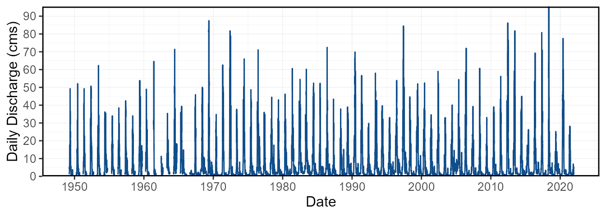
When plotting multiple stations, they typically produce a separate plot for each stations. However, the plot_flow_data() function has an argument called ‘one_plot’ that will plot all stations on the same plot if set to TRUE.
plot_flow_data(station_number = c("08NM241", "08NM242"), one_plot = TRUE)
$Daily_Flows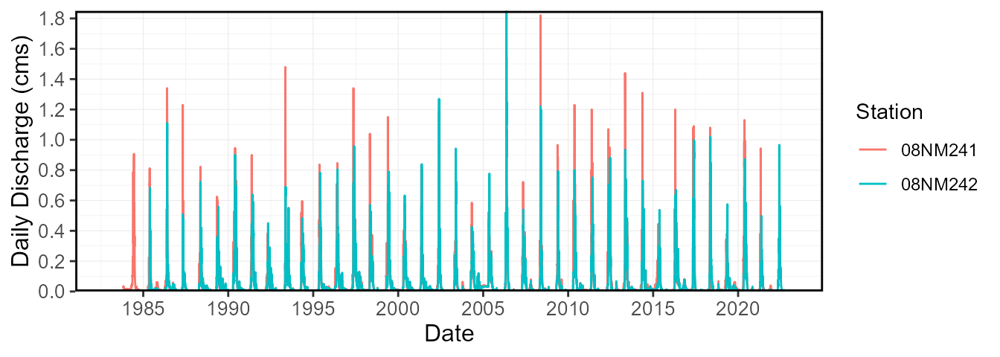
The screen_flow_data() function provides an over view of the number of flow values per year and each month per year, along with annual minimums, maximums, means, and standard deviations to inspect for outliers in the data.
screen_flow_data(station_number = "08NM116")
# A tibble: 69 x 22
STATION_NUMBER Year n_days n_Q n_missing_Q Minimum Maximum Mean Median
<chr> <dbl> <int> <int> <int> <dbl> <dbl> <dbl> <dbl>
1 08NM116 1949 365 183 182 0.623 49.3 7.77 2.27
2 08NM116 1950 365 183 182 0.623 52.1 7.76 2.07
3 08NM116 1951 365 183 182 0.623 49.3 8.99 3.71
4 08NM116 1952 366 183 183 0.850 50.7 10.3 3.17
5 08NM116 1953 365 183 182 0.340 62.3 8.30 4.56
6 08NM116 1954 365 183 182 0.566 36.2 11.3 5.38
7 08NM116 1955 365 160 205 0.396 34 8.97 4.02
8 08NM116 1956 366 176 190 0.719 38.5 9.04 3.97
9 08NM116 1957 365 170 195 0.680 42.5 8.88 2.44
10 08NM116 1958 365 183 182 0.311 34 6.98 2.32
# ... with 59 more rows, and 13 more variables: StandardDeviation <dbl>,
# Jan_missing_Q <int>, Feb_missing_Q <int>, Mar_missing_Q <int>,
# Apr_missing_Q <int>, May_missing_Q <int>, Jun_missing_Q <int>,
# Jul_missing_Q <int>, Aug_missing_Q <int>, Sep_missing_Q <int>,
# Oct_missing_Q <int>, Nov_missing_Q <int>, Dec_missing_Q <int>To view the summary data in the screen_flow_data() function, the plot_data_screening() function will plot the annual minimums, maximums, means, and standard deviations.
plot_data_screening(station_number = "08NM116")
$Data_Screening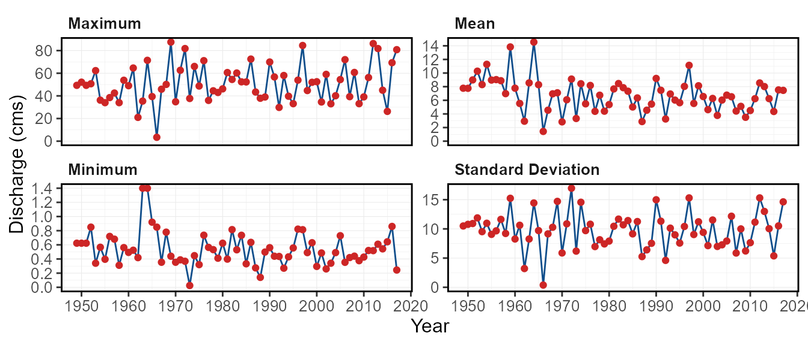
Use the plot_missing_dates() function to plot out the missing dates for each month of each year to view for data availability and gaps.
plot_missing_dates(station_number = "08NM116")
$Missing_Dates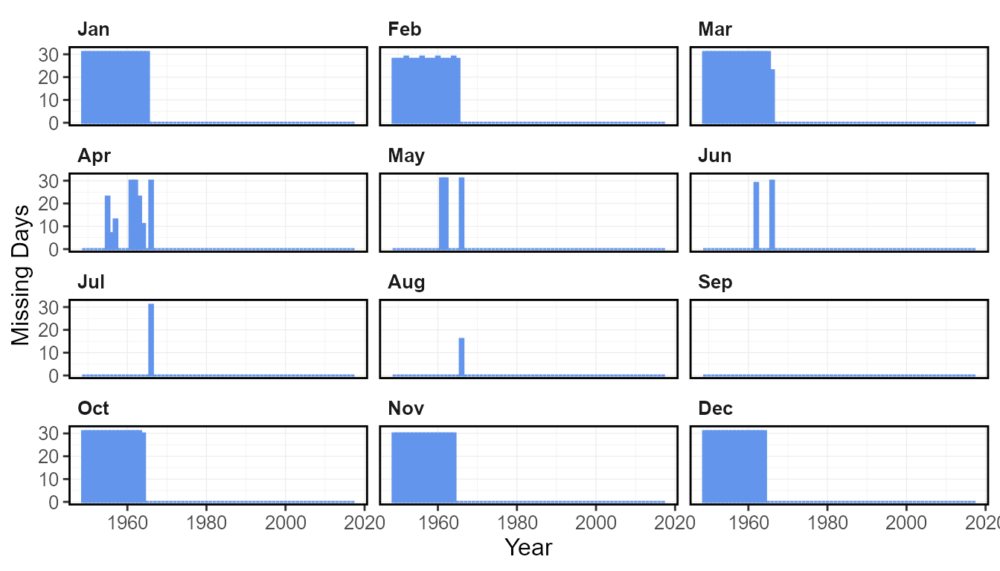
6. Functions for Calculating Statistics
The majority of the ‘fasstr’ functions produce statistics over a certain time period, either long-term, annually, monthly, or daily. These statistics are produced using the calc_* functions and can be visualized using their corresponding plot_* functions. The following sections are an overview of the different statistic functions.
Basic Summary Statistics
These functions calculate the means, medians, maximums, minimums, and percentiles (choice of using the ‘percentiles’ argument) of a flow data set:
-
calc_longterm_daily_stats()- calculate the long-term and long-term monthly summary statistics based on daily mean flows -
calc_longterm_monthly_stats()- calculate the long-term annual and monthly summary statistics based on monthly mean flows -
calc_annual_stats()- calculate annual summary statistics -
calc_monthly_stats()- calculate annual monthly summary statistics -
calc_daily_stats()- calculate daily summary statistics
These basic statistics can also be viewed using their corresponding plotting functions:
-
plot_longterm_daily_stats()- plot the long-term monthly summary statistics based on daily mean flows -
plot_longterm_monthly_stats()- plot the long-term monthly summary statistics based on annual monthly mean flows -
plot_annual_stats()- plot annual summary statistics -
plot_monthly_stats()- plot annual monthly summary statistics -
plot_daily_stats()- plot daily summary statistics
Basic long-term statistics
The long-term calc_ and plot_ functions calculate the long-term and long-term monthly mean, median, maximum, minimum, and percentiles of all daily mean flows. For example, for a given month, all daily flow values for a given month over the entire record are summarized together. For the ‘Long-term’ category, it summarizes all flow values over the entire record. You can also specify a certain period of months to summarize together (ex. Jul-Sep flows) using the ‘custom_months’ argument (listing the months) and labelling it using the ‘custom_months_label’ argument (ex. “Summer Flows”).
calc_longterm_daily_stats(station_number = "08NM116", start_year = 1974)
# A tibble: 13 x 8
STATION_NUMBER Month Mean Median Maximum Minimum P10 P90
<chr> <fct> <dbl> <dbl> <dbl> <dbl> <dbl> <dbl>
1 08NM116 Jan 1.14 0.940 9.5 0.160 0.576 1.78
2 08NM116 Feb 1.16 0.960 5.81 0.140 0.542 1.95
3 08NM116 Mar 1.80 1.29 17.5 0.380 0.717 3.55
4 08NM116 Apr 8.19 5.88 53.5 0.505 1.42 18.0
5 08NM116 May 24.4 21.8 80.8 2.55 10.3 40.8
6 08NM116 Jun 22.5 20.3 86.2 0.450 6.20 41.1
7 08NM116 Jul 6.23 3.94 76.8 0.332 1.18 13.7
8 08NM116 Aug 2.18 1.56 22.4 0.427 0.834 4.15
9 08NM116 Sep 2.30 1.60 17.6 0.364 0.771 4.70
10 08NM116 Oct 2.13 1.65 15.2 0.267 0.844 4.25
11 08NM116 Nov 1.92 1.51 11.7 0.260 0.599 3.75
12 08NM116 Dec 1.26 1.07 7.30 0.244 0.541 2.20
13 08NM116 Long-term 6.28 1.81 86.2 0.140 0.710 20.1 The plotting long-term statistics function will plot the monthly mean, median, maximum, and minimum values along with the 5th, 25th, 75th, and 95th percentiles all on one plot. The percentiles are not customizable for this function. The long-term mean and median values are also plotted.
plot_longterm_daily_stats(station_number = "08NM116", start_year = 1974)
$`Long-term_Daily_Statistics`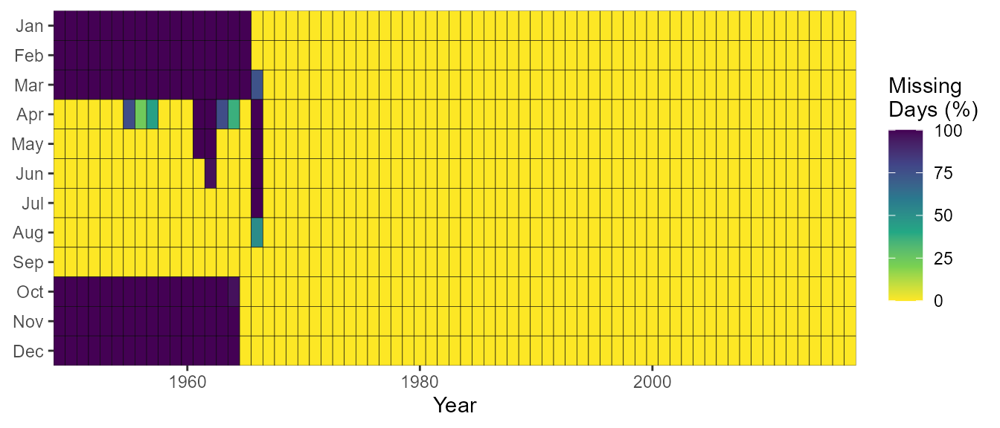
Similarly, the *_longterm_monthly_stats() functions will calculate the mean, median, maximum, and percentiles of monthly mean flows. Meaning the all daily flows for each month and each year are averaged, and the statistics are based on these annual monthly means. The “Annual” data row summarizes the mean, median, maximum, and percentiles from all annual means.
calc_longterm_monthly_stats(station_number = "08NM116", start_year = 1974)
# A tibble: 13 x 8
STATION_NUMBER Month Mean Median Maximum Minimum P10 P90
<chr> <fct> <dbl> <dbl> <dbl> <dbl> <dbl> <dbl>
1 08NM116 Jan 1.14 0.972 6.12 0.316 0.625 1.67
2 08NM116 Feb 1.16 0.965 3.83 0.353 0.600 1.72
3 08NM116 Mar 1.80 1.44 6.93 0.507 0.843 2.84
4 08NM116 Apr 8.19 7.73 23.9 1.60 2.88 13.0
5 08NM116 May 24.4 23.8 45.0 14.0 16.1 32.7
6 08NM116 Jun 22.5 22.1 48.6 3.15 11.8 35.6
7 08NM116 Jul 6.23 4.42 25.6 0.921 1.98 12.9
8 08NM116 Aug 2.18 1.76 10.2 0.872 1.13 3.37
9 08NM116 Sep 2.30 1.72 8.11 0.700 1.01 4.05
10 08NM116 Oct 2.13 1.82 5.66 0.533 1.02 3.66
11 08NM116 Nov 1.92 1.54 5.41 0.498 0.715 3.38
12 08NM116 Dec 1.26 1.10 3.65 0.450 0.548 2.14
13 08NM116 Annual 6.28 6.26 11.1 2.88 4.37 8.36plot_longterm_monthly_stats(station_number = "08NM116", start_year = 1974)
$`Long-term_Monthly_Statistics`
Basic annual statistics
The annual calc_ and plot_ functions calculate the annual mean, median, maximum, minimum, and percentiles of daily flows. All flow values for a given year are summarized together.
calc_annual_stats(station_number = "08NM116", start_year = 1974)
# A tibble: 44 x 8
STATION_NUMBER Year Mean Median Maximum Minimum P10 P90
<chr> <dbl> <dbl> <dbl> <dbl> <dbl> <dbl> <dbl>
1 08NM116 1974 8.43 1.34 66 0.447 0.709 33.0
2 08NM116 1975 5.48 1.54 48.7 0.320 0.580 19.6
3 08NM116 1976 8.18 3.84 71.1 0.736 0.884 25.6
4 08NM116 1977 4.38 1.26 36 0.564 0.776 17.2
5 08NM116 1978 6.75 3.28 44.5 0.532 0.828 19.7
6 08NM116 1979 4.40 1.56 43 0.411 0.618 15.9
7 08NM116 1980 5.37 1.88 46.2 0.623 0.793 20.1
8 08NM116 1981 7.67 2.77 60.6 0.398 1.5 22.3
9 08NM116 1982 8.46 2.68 54.5 0.815 1.40 30.3
10 08NM116 1983 7.85 3.13 60.2 0.530 1.44 23.5
# ... with 34 more rowsThe percentiles in the plot_annual_stats() function are fully customizable similar to the calc_ function.
plot_annual_stats(station_number = "08NM116", start_year = 1974)
$Annual_Statistics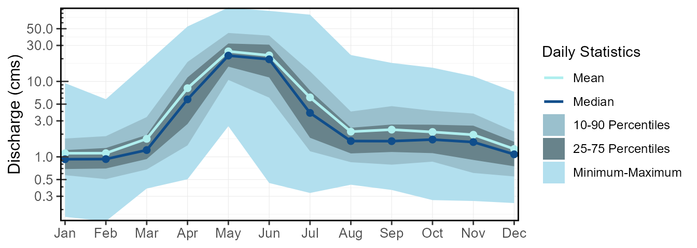
Basic monthly statistics
The monthly calc_ and plot_ functions calculate the mean, median, maximum, minimum, and percentiles of daily flows for each month of each year. All flow values for a given month and year are summarized together.
calc_monthly_stats(station_number = "08NM116", start_year = 1974)
# A tibble: 528 x 9
STATION_NUMBER Year Month Mean Median Maximum Minimum P10 P90
<chr> <dbl> <fct> <dbl> <dbl> <dbl> <dbl> <dbl> <dbl>
1 08NM116 1974 Jan 1.02 1.02 1.26 0.864 0.906 1.12
2 08NM116 1974 Feb 0.985 0.984 1.06 0.830 0.944 1.04
3 08NM116 1974 Mar 1.21 1.12 2.14 0.855 0.937 1.97
4 08NM116 1974 Apr 7.76 4.91 28.3 1.85 1.92 18.7
5 08NM116 1974 May 29.8 30.3 50.4 15.9 17.5 43.3
6 08NM116 1974 Jun 44.5 44.9 66 20.6 25.6 61.3
7 08NM116 1974 Jul 9.97 8.21 24.8 2.42 3.79 20.1
8 08NM116 1974 Aug 1.76 1.61 3.71 0.960 1.20 2.28
9 08NM116 1974 Sep 1.47 1.39 2.10 1.13 1.20 1.78
10 08NM116 1974 Oct 1.23 1.12 2.08 0.838 0.867 1.69
# ... with 518 more rowsThe percentiles in the plot_monthly_stats() function are fully customizable similar to the calc_ function. A plot for each different statistic (mean, median, each percentiles, etc.) is created to visualize the monthly patterns over the years.
plot_monthly_stats(station_number = "08NM116", start_year = 1974)[1]
$Mean_Monthly_Statistics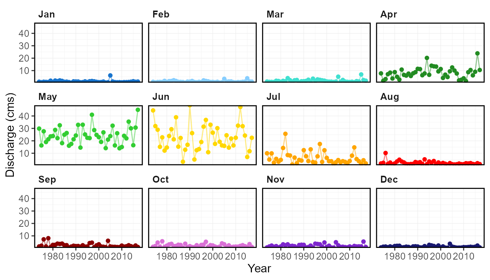
Basic daily statistics
The daily calc_ and plot_ functions calculate the mean, median, maximum, minimum, and percentiles of daily flows for each day of the year. For example, for a given day of year (i.e. day 1 (Jan-01) or day 2 (Jan-02)), all flow values for that day from the entire record are summarized together. Only the first 365 days of each year are summarized (ignores the 366th day from leap years).
calc_daily_stats(station_number = "08NM116", start_year = 1974)
# A tibble: 365 x 11
STATION_NUMBER Date DayofYear Mean Median Minimum Maximum P5 P25 P75
<chr> <chr> <dbl> <dbl> <dbl> <dbl> <dbl> <dbl> <dbl> <dbl>
1 08NM116 Jan-~ 1 1.08 0.970 0.328 2.51 0.540 0.692 1.38
2 08NM116 Jan-~ 2 1.05 0.920 0.310 2.26 0.526 0.690 1.35
3 08NM116 Jan-~ 3 1.03 0.897 0.290 2 0.524 0.703 1.22
4 08NM116 Jan-~ 4 1.04 0.903 0.284 2.52 0.505 0.732 1.29
5 08NM116 Jan-~ 5 1.03 0.895 0.302 2.25 0.534 0.709 1.23
6 08NM116 Jan-~ 6 1.03 0.876 0.315 2.32 0.519 0.742 1.30
7 08NM116 Jan-~ 7 1.06 0.905 0.312 2.80 0.493 0.744 1.20
8 08NM116 Jan-~ 8 1.10 0.960 0.314 4 0.514 0.755 1.23
9 08NM116 Jan-~ 9 1.11 0.977 0.327 4.20 0.509 0.740 1.33
10 08NM116 Jan-~ 10 1.12 0.947 0.334 4.70 0.450 0.707 1.30
# ... with 355 more rows, and 1 more variable: P95 <dbl>The plotting daily statistics function will plot the monthly mean, median, maximum, and minimum values along with the 5th, 25th, 75th, and 95th percentiles all on one plot. The percentiles are not customizable for this function.
plot_daily_stats(station_number = "08NM116", start_year = 1974)
$Daily_Statistics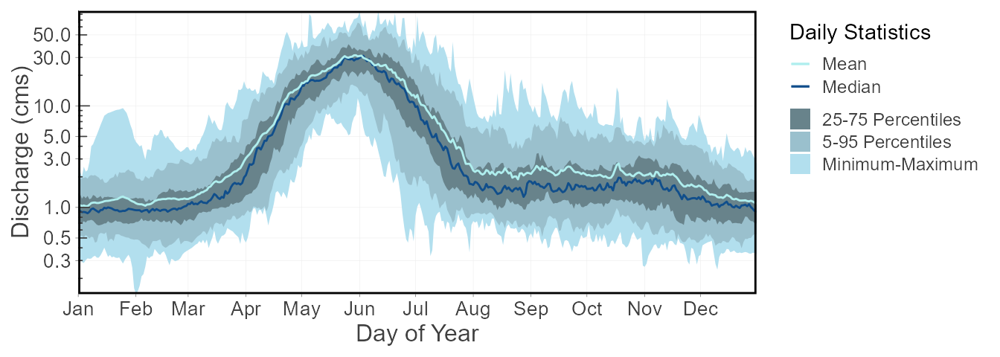
You can also plot an individual year’s flow data for comparison use the ‘add_year’ argument.
plot_daily_stats(station_number = "08NM116", start_year = 1974, add_year = 2000)
$Daily_Statistics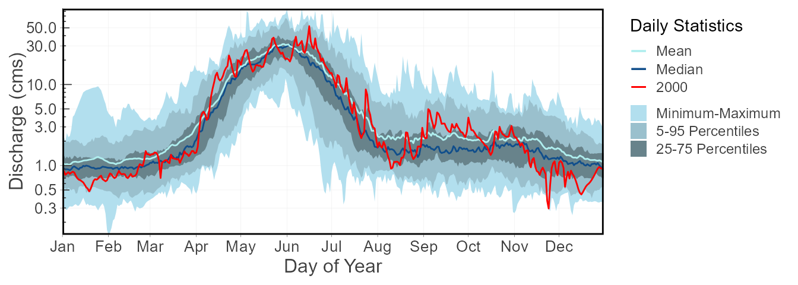
Basic statistics and plotting with other ‘values’
The calc_ and plot_ functions will summarize any values provided to the functions, with the default column being ‘Value’. While for ‘fasstr’ this defaults to daily mean flows, any daily value can be summarized (water level, precipitation amount, etc.) as long as the methods of analyses are similar for the parameter type. As there are no units presented in the calc_ functions this should not be problem for most calculations. However, the plots come standard with a “Discharge (cms)” y-axis, which can be changed afterwards using ‘ggplot2’ functions.
To facilitate the plotting of the daily volume or yield statistics from ‘fasstr’, after adding them to your flow data using the add_daily_volume() or add_daily_yield() functions, by listing the values argument as either ‘Volume_m3’ or ‘Yield_mm’ (from their respective add_* functions), the discharge axis title will adjust accordingly.
add_daily_volume(station_number = "08NM116") %>% plot_annual_stats(values = "Volume_m3", start_year = 1974)
$Annual_Statistics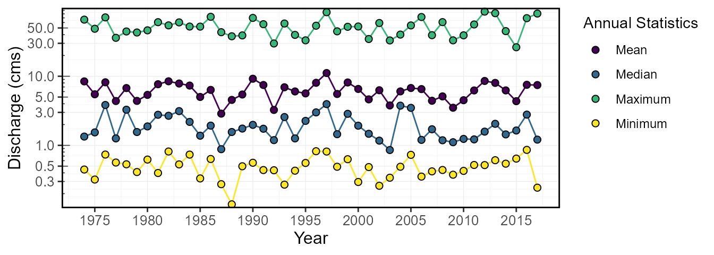
add_daily_yield(station_number = "08NM116") %>% plot_daily_stats(values = "Yield_mm", start_year = 1974)
$Daily_Statistics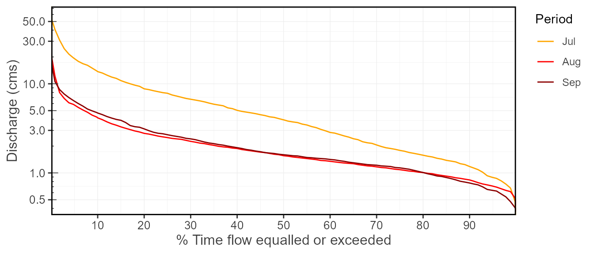
Cumulative Flow Statistics
Total volumetric of runoff yield flows within a given year can provide important hydrological information on a basin-wide scale. These functions calculate the total volume (in cubic metres) or yield (in millimetres; based on basin size) for a flow data set, at the annual, monthly, or daily cumulative scale.
-
calc_annual_cumulative_stats()- calculate annual (and seasonal) cumulative flows -
calc_monthly_cumulative_stats()- calculate cumulative monthly flow statistics -
calc_daily_cumulative_stats()- calculate cumulative daily flow statistics
These statistics can also be viewed using their corresponding plotting functions:
-
plot_annual_cumulative_stats()- plot annual and seasonal total flows -
plot_monthly_cumulative_stats()- plot cumulative monthly flow statistics -
plot_daily_cumulative_stats()- plot cumulative daily flow statistics
These functions default to volumetric flows, but using the use_yield and basin_area arguments the runoff yield can be calculated for each period. If there is a groups column of HYDAT station numbers, then the function will automatically pull the basin area out of HYDAT if available; otherwise a basin area will be required. Due to the requirements of a complete annual dataset to calculate total flows, only years of complete data are used.
Cumulative annual statistics
The calc_annual_cumulative_stats() function provides the total annual volume or runoff yield (if use_yield’ is used). It totals all flows for a given year.
calc_annual_cumulative_stats(station_number = "08NM116", start_year = 1974)
# A tibble: 44 x 3
STATION_NUMBER Year Total_Volume_m3
<chr> <dbl> <dbl>
1 08NM116 1974 265854182.
2 08NM116 1975 172900397.
3 08NM116 1976 258693177.
4 08NM116 1977 138177100.
5 08NM116 1978 212792574.
6 08NM116 1979 138807734.
7 08NM116 1980 169956317.
8 08NM116 1981 241854163.
9 08NM116 1982 266735721.
10 08NM116 1983 247618080.
# ... with 34 more rowsBy using the ‘include_seasons’ (logical TRUE/FALSE) argument, then total seasonal flows will also be added to the results. Two columns of two-seasons (2-six months), and four columns of four-seasons (4-three months) will be added. The start month of the first seasons will begin in the first month of the year (ex. Jan for Calendar years or Oct for water years starting in October).
calc_annual_cumulative_stats(station_number = "08NM116", start_year = 1974, include_seasons = TRUE)
# A tibble: 44 x 9
STATION_NUMBER Year Total_Volume_m3 `Jan-Jun_Volume~ `Jul-Dec_Volume~
<chr> <dbl> <dbl> <dbl> <dbl>
1 08NM116 1974 265854182. 223662989. 42191194.
2 08NM116 1975 172900397. 136045958. 36854438.
3 08NM116 1976 258693177. 164417817. 94275360.
4 08NM116 1977 138177100. 115279113. 22897987.
5 08NM116 1978 212792574. 146659335. 66133239.
6 08NM116 1979 138807734. 117444383. 21363350.
7 08NM116 1980 169956317. 131126774. 38829542.
8 08NM116 1981 241854163. 165675542. 76178621.
9 08NM116 1982 266735721. 154229097. 112506624.
10 08NM116 1983 247618080. 191691360. 55926720.
# ... with 34 more rows, and 4 more variables: `Jan-Mar_Volume_m3` <dbl>,
# `Apr-Jun_Volume_m3` <dbl>, `Jul-Sep_Volume_m3` <dbl>,
# `Oct-Dec_Volume_m3` <dbl>The total volumes for each year can be plotted using the plot_annual_cumulative_stats() function. When using ‘include_seasons = TRUE’ two additional plots will be created, one for two- and four-seasons.
plot_annual_cumulative_stats(station_number = "08NM116", start_year = 1974)
$Total_Volume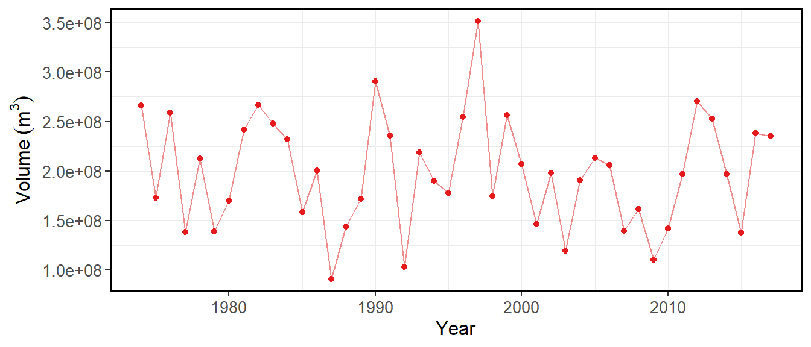
Cumulative monthly and statistics
The calc_monthly_cumulative_stats() and plot_monthly_cumulative_stats() functions calculate the mean, median, maximum, minimum, and percentiles of total cumulative monthly flows. For each month of each year, the total volume or runoff yield is determined. Then within a given year, the cumulative total for each month is determined by added all previous months (ex. Jan = Jan total; Feb = Jan+Feb totals, etc). Then the mean, median, maximum, minimum, and percentiles are calculated based on those monthly cumulative totals for each year. In interpreting the information, if a given total flow is below the mean value, then the cumulative flow is less than average. In other words, less volume has passed through the station than normal at that point in time. The percentiles in the calc_ function are flexible using the ‘percentiles’ argument.
calc_monthly_cumulative_stats(station_number = "08NM116", start_year = 1974)
# A tibble: 12 x 10
STATION_NUMBER Month Mean Median Maximum Minimum P5 P25 P75
<chr> <fct> <dbl> <dbl> <dbl> <dbl> <dbl> <dbl> <dbl>
1 08NM116 Jan 3.06e6 2.60e6 1.64e7 8.45e5 1.48e6 1.95e6 3.55e6
2 08NM116 Feb 5.89e6 4.95e6 2.46e7 1.73e6 2.70e6 3.82e6 6.45e6
3 08NM116 Mar 1.07e7 8.91e6 3.83e7 3.09e6 4.88e6 6.63e6 1.19e7
4 08NM116 Apr 3.20e7 2.89e7 7.41e7 9.90e6 1.30e7 2.32e7 3.70e7
5 08NM116 May 9.72e7 9.15e7 1.60e8 5.03e7 5.46e7 7.76e7 1.13e8
6 08NM116 Jun 1.56e8 1.56e8 2.55e8 7.62e7 9.41e7 1.26e8 1.85e8
7 08NM116 Jul 1.72e8 1.77e8 3.02e8 8.14e7 9.96e7 1.30e8 2.06e8
8 08NM116 Aug 1.78e8 1.81e8 3.12e8 8.50e7 1.03e8 1.34e8 2.19e8
9 08NM116 Sep 1.84e8 1.87e8 3.24e8 8.68e7 1.05e8 1.40e8 2.28e8
10 08NM116 Oct 1.90e8 1.93e8 3.38e8 8.82e7 1.08e8 1.46e8 2.31e8
11 08NM116 Nov 1.95e8 1.95e8 3.46e8 8.95e7 1.10e8 1.52e8 2.34e8
12 08NM116 Dec 1.98e8 1.97e8 3.51e8 9.07e7 1.12e8 1.55e8 2.39e8
# ... with 1 more variable: P95 <dbl>The plotting monthly cumulative statistics function will plot the monthly total mean, median, maximum, and minimum values along with the 5th, 25th, 75th, and 95th percentiles all on one plot. The percentiles are not customizable for this function.
plot_monthly_cumulative_stats(station_number = "08NM116", start_year = 1974)
$Monthly_Cumulative_Volumetric_Stats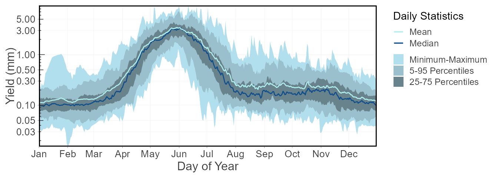
Cumulative daily statistics
The calc_daily_cumulative_stats() and plot_daily_cumulative_stats() functions calculate the mean, median, maximum, minimum, and percentiles of total cumulative daily flows. For each day of each year, the total volume or runoff yield is determined. Then within a given year, the a cumulative total for each day is determined by added all previous days (ex. Jan-01 = Jan-01 total; Jan-02 = Jan-01+Jan-02 totals, etc). Then the mean, median, maximum, minimum, and percentiles are calculated based on those daily cumulative totals for each year. In interpreting the information, if a given total flow is below the mean value, then the cumulative flow is less than average. In other words, less volume has passed through the station than normal at that point in time. Viewing the plot below may help understand how this function works. The percentiles in the calc_ function are flexible using the ‘percentiles’ argument.
calc_daily_cumulative_stats(station_number = "08NM116", start_year = 1974)
# A tibble: 365 x 11
STATION_NUMBER Date DayofYear Mean Median Minimum Maximum P5 P25
<chr> <chr> <dbl> <dbl> <dbl> <dbl> <dbl> <dbl> <dbl>
1 08NM116 Jan-~ 1 9.32e4 8.38e4 28339. 2.17e5 4.67e4 5.97e4
2 08NM116 Jan-~ 2 1.84e5 1.60e5 55123. 4.12e5 9.18e4 1.19e5
3 08NM116 Jan-~ 3 2.73e5 2.36e5 80179. 5.81e5 1.35e5 1.79e5
4 08NM116 Jan-~ 4 3.63e5 3.13e5 104717. 7.69e5 1.82e5 2.41e5
5 08NM116 Jan-~ 5 4.52e5 3.88e5 130810. 9.53e5 2.32e5 3.09e5
6 08NM116 Jan-~ 6 5.41e5 4.67e5 158026. 1.12e6 2.81e5 3.68e5
7 08NM116 Jan-~ 7 6.33e5 5.47e5 184982. 1.29e6 3.27e5 4.31e5
8 08NM116 Jan-~ 8 7.28e5 6.23e5 212112. 1.45e6 3.72e5 4.96e5
9 08NM116 Jan-~ 9 8.25e5 7.12e5 240365. 1.80e6 4.17e5 5.63e5
10 08NM116 Jan-~ 10 9.21e5 8.03e5 269222. 2.21e6 4.65e5 6.27e5
# ... with 355 more rows, and 2 more variables: P75 <dbl>, P95 <dbl>The plotting monthly cumulative statistics function will plot the monthly total mean, median, maximum, and minimum values along with the 5th, 25th, 75th, and 95th percentiles all on one plot. The percentile values for the inner and outer percentile ribbons can be customized using the inner_percentiles and outer_percentiles arguments (see documentation), and the extremes ribbon can be removed by setting include_extremes = FALSE.
plot_daily_cumulative_stats(station_number = "08NM116", start_year = 1974, use_yield = TRUE)
$Daily_Cumulative_Yield_Stats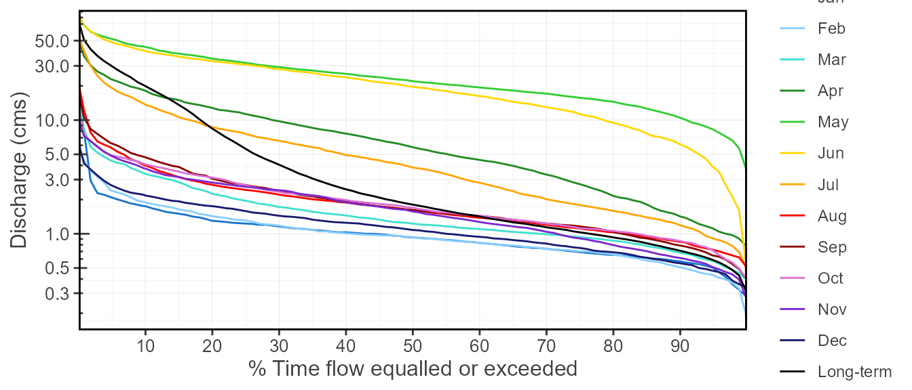
Other Long-term Statistics
The functions summarize the data over the entire record:
-
calc_longterm_mean()- calculate the long-term mean annual discharge -
calc_longterm_percentile()- calculate the long-term percentiles -
calc_flow_percentile()- calculate the percentile rank of a flow value
calc_longterm_mean() calculates the mean of all the daily flows, and specific percents of the longterm mean (using percent_MAD argument). It can also be known as the long-term mean annual discharge, MAD.
calc_longterm_mean(station_number = "08NM116", start_year = 1974, percent_MAD = c(5,10,20))
# A tibble: 1 x 5
STATION_NUMBER LTMAD `5%MAD` `10%MAD` `20%MAD`
<chr> <dbl> <dbl> <dbl> <dbl>
1 08NM116 6.28 0.314 0.628 1.26calc_longterm_percentile() calculates the selected long-term percentiles of all the daily flow values.
calc_longterm_percentile(station_number = "08NM116", start_year = 1974, percentiles = c(25,50,75))
# A tibble: 1 x 4
STATION_NUMBER P25 P50 P75
<chr> <dbl> <dbl> <dbl>
1 08NM116 1.03 1.81 5.72calc_flow_percentile() calculates the percentile rank of a specified flow value, as flow_value. It compares all daily flow values determines where the specified flow values ranks amongst all flows.
calc_flow_percentile(station_number = "08NM116", start_year = 1974, flow_value = 6.270)
# A tibble: 1 x 2
STATION_NUMBER Percentile
<chr> <dbl>
1 08NM116 76.3Can also plot flow duration curves using the function:
-
plot_flow_duration()- plot flow duration curves
plot_flow_duration(station_number = "08NM116", start_year = 1974)
$Flow_Duration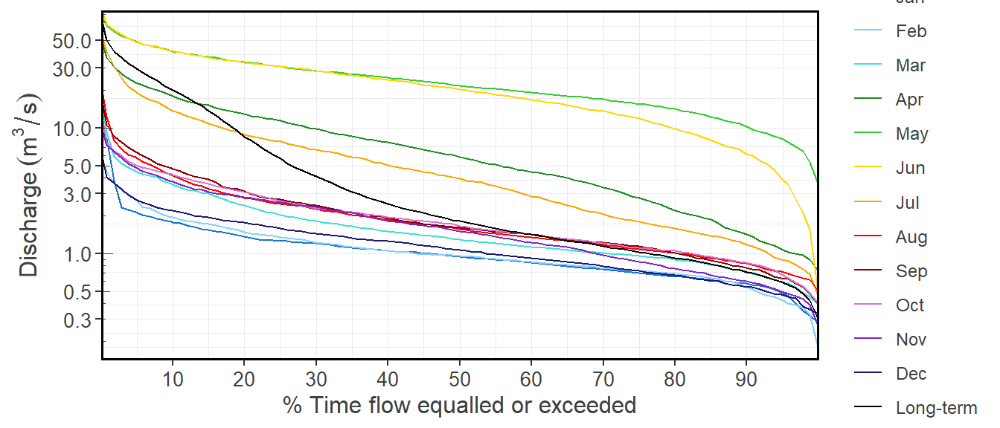
plot_flow_duration(station_number = "08NM116", start_year = 1974, months = 7:9, include_longterm = FALSE)
$Flow_Duration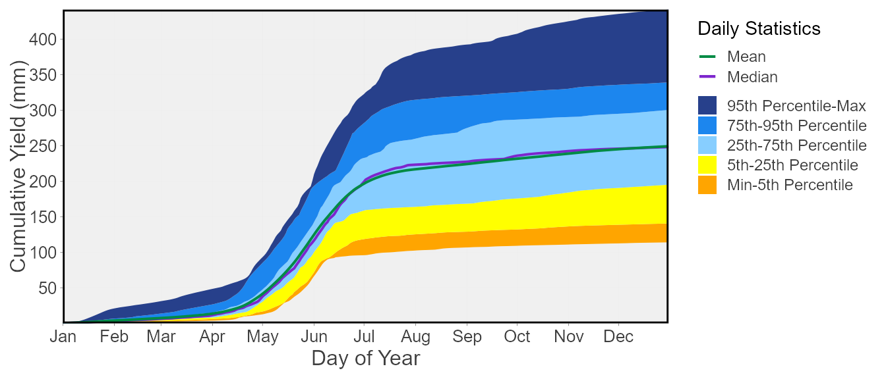
Other Annual Statistics
Beside the basic summary statistics, there are other useful statistics for interpreting annual streamflow data. The following are the calculation functions:
-
calc_annual_flow_timing()- calculate annual flow timing -
calc_annual_lowflows()- calculate annual low flow values and dates -
calc_annual_peaks()- calculate annual low and high flow values and dates -
calc_annual_outside_normal()- calculate annual days above and below normal -
calc_all_annual_stats()- calculate all ‘fasstr’ annual statistics
and their corresponding and other plotting functions:
-
plot_annual_flow_timing()- plot annual flow timing -
plot_annual_lowflows()- plot annual low flow values and dates -
plot_annual_outside_normal()- plot annual days above and below normal -
plot_annual_means()- plot annual means compared to the long-term mean
Annual flow timing
The calc_annual_flow_timing() calculates the day of year when a portion of an total annual volumetric flow has occurred. Using the percent_total argument, one or multiple portions of annual flow can be calculated. Using 50 as the percent is similar to the center of volume or timing of half flow. The day of year and date will be produced.
calc_annual_flow_timing(station_number = "08NM116", start_year = 1974)
# A tibble: 44 x 10
STATION_NUMBER Year DoY_25pct_TotalQ Date_25pct_Tota~ DoY_33.3pct_Tot~
<chr> <dbl> <dbl> <date> <dbl>
1 08NM116 1974 135 1974-05-15 146
2 08NM116 1975 146 1975-05-26 153
3 08NM116 1976 143 1976-05-22 151
4 08NM116 1977 124 1977-05-04 131
5 08NM116 1978 134 1978-05-14 142
6 08NM116 1979 126 1979-05-06 133
7 08NM116 1980 127 1980-05-06 132
8 08NM116 1981 141 1981-05-21 145
9 08NM116 1982 147 1982-05-27 155
10 08NM116 1983 126 1983-05-06 137
# ... with 34 more rows, and 5 more variables: Date_33.3pct_TotalQ <date>,
# DoY_50pct_TotalQ <dbl>, Date_50pct_TotalQ <date>, DoY_75pct_TotalQ <dbl>,
# Date_75pct_TotalQ <date>The timing of flows can also be plotted.
plot_annual_flow_timing(station_number = "08NM116", start_year = 1974)
$Annual_Flow_Timing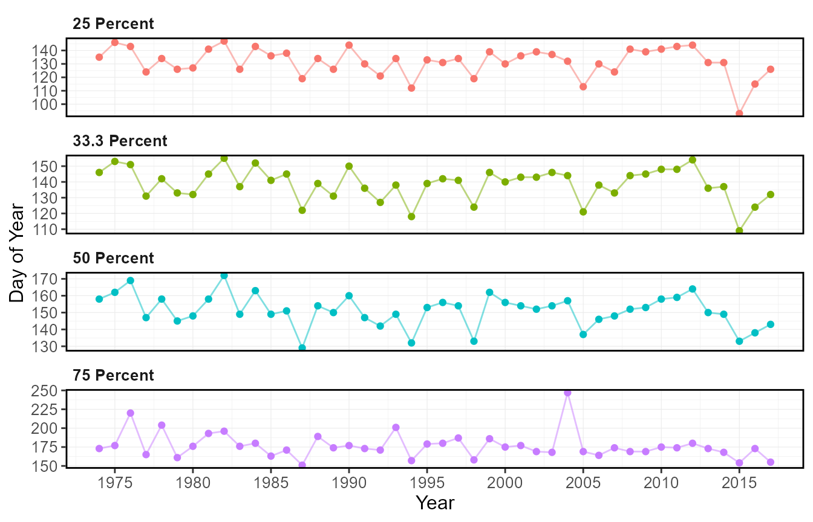
Annual low-flows
The calc_annual_lowflows() calculates the annual minimum values, the day of year, and dates of specified rolling mean days (can do multiple days if desired).
calc_annual_lowflows(station_number = "08NM116", start_year = 1974)
# A tibble: 44 x 14
STATION_NUMBER Year Min_1_Day Min_1_Day_DoY Min_1_Day_Date Min_3_Day
<chr> <dbl> <dbl> <dbl> <date> <dbl>
1 08NM116 1974 0.447 333 1974-11-29 0.533
2 08NM116 1975 0.320 11 1975-01-11 0.378
3 08NM116 1976 0.736 38 1976-02-07 0.741
4 08NM116 1977 0.564 73 1977-03-14 0.627
5 08NM116 1978 0.532 55 1978-02-24 0.630
6 08NM116 1979 0.411 268 1979-09-25 0.416
7 08NM116 1980 0.623 9 1980-01-09 0.632
8 08NM116 1981 0.398 261 1981-09-18 0.468
9 08NM116 1982 0.815 6 1982-01-06 0.883
10 08NM116 1983 0.530 357 1983-12-23 0.562
# ... with 34 more rows, and 8 more variables: Min_3_Day_DoY <dbl>,
# Min_3_Day_Date <date>, Min_7_Day <dbl>, Min_7_Day_DoY <dbl>,
# Min_7_Day_Date <date>, Min_30_Day <dbl>, Min_30_Day_DoY <dbl>,
# Min_30_Day_Date <date>The annual low flow values and the day of the low flow values can be plotted, separately, using the plot_annual_lowflows() function.
plot_annual_lowflows(station_number = "08NM116", start_year = 1974)
$Annual_Low_Flows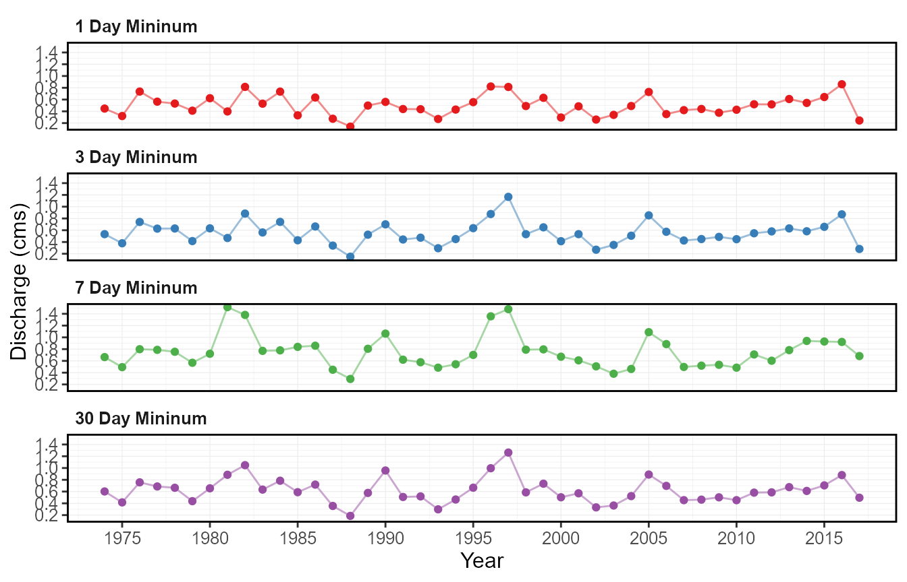
$Annual_Low_Flows_Dates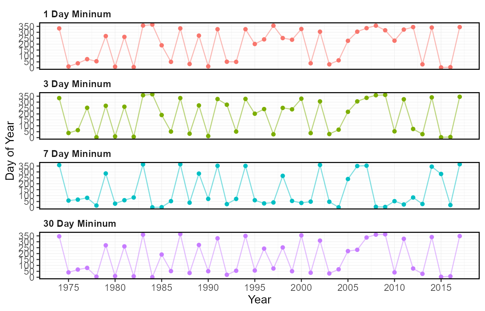
Annual peaks
Similar to calc_annual_lowflows(), calc_annual_peaks() calculates the annual minimum and maximum values, the day of year, and dates of specified rolling mean days.
calc_annual_peaks(station_number = "08NM116", start_year = 1974)
# A tibble: 44 x 8
STATION_NUMBER Year Min_1_Day Min_1_Day_DoY Min_1_Day_Date Max_1_Day
<chr> <dbl> <dbl> <dbl> <date> <dbl>
1 08NM116 1974 0.447 333 1974-11-29 66
2 08NM116 1975 0.320 11 1975-01-11 48.7
3 08NM116 1976 0.736 38 1976-02-07 71.1
4 08NM116 1977 0.564 73 1977-03-14 36
5 08NM116 1978 0.532 55 1978-02-24 44.5
6 08NM116 1979 0.411 268 1979-09-25 43
7 08NM116 1980 0.623 9 1980-01-09 46.2
8 08NM116 1981 0.398 261 1981-09-18 60.6
9 08NM116 1982 0.815 6 1982-01-06 54.5
10 08NM116 1983 0.530 357 1983-12-23 60.2
# ... with 34 more rows, and 2 more variables: Max_1_Day_DoY <dbl>,
# Max_1_Day_Date <date>Number of days per year outside of normal
The calc_annual_outside_normal() calculates the number of days per year that are above and below “normal”, “normal” typically defined as 25th and 75th percentiles. The normal limits can be determined using the normal_percentiles argument, listing the lower and upper normal ranges, respectively (e.g. c(25, 75)). The function calculates the lower and upper percentiles for each day of the year over all years, and sums all days that are above or below the daily normal ranges for a given year. Rolling averages can also be used in this function using the roll_days argument.
calc_annual_outside_normal(station_number = "08NM116", start_year = 1974)
# A tibble: 44 x 5
STATION_NUMBER Year Days_Below_Normal Days_Above_Normal Days_Outside_Normal
<chr> <dbl> <int> <int> <int>
1 08NM116 1974 72 77 149
2 08NM116 1975 138 32 170
3 08NM116 1976 54 144 198
4 08NM116 1977 107 8 115
5 08NM116 1978 21 114 135
6 08NM116 1979 144 67 211
7 08NM116 1980 79 61 140
8 08NM116 1981 15 203 218
9 08NM116 1982 35 208 243
10 08NM116 1983 14 208 222
# ... with 34 more rowsEach of the above, below, and total days outside of normal can be plotted using the plot_annual_outside_normal() function.
plot_annual_outside_normal(station_number = "08NM116", start_year = 1974)
$Annual_Days_Outside_Normal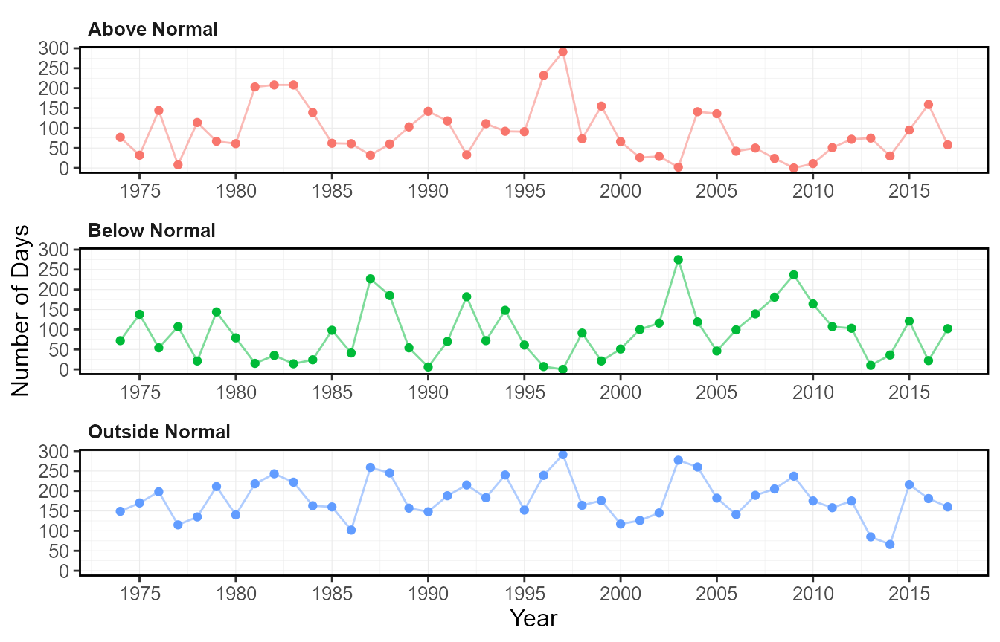
Calculating all annual statistics
The calc_all_annual_stats() calculates all statistics that have a single annual value. This includes all the calc_annual_* and the calc_monthly_statistics() functions. Several arguments provided for customization of the statistics. There is no corresponding plotting function for this calculation function.
colnames(calc_all_annual_stats(station_number = "08NM116", start_year = 1974))
[1] "STATION_NUMBER" "Year" "Annual_Maximum"
[4] "Annual_Mean" "Annual_Median" "Annual_Minimum"
[7] "Annual_P10" "Annual_P90" "Min_1_Day"
[10] "Min_1_Day_DoY" "Min_3_Day" "Min_3_Day_DoY"
[13] "Min_7_Day" "Min_7_Day_DoY" "Min_30_Day"
[16] "Min_30_Day_DoY" "Total_Volume_m3" "Jan-Jun_Volume_m3"
[19] "Jul-Dec_Volume_m3" "Jan-Mar_Volume_m3" "Apr-Jun_Volume_m3"
[22] "Jul-Sep_Volume_m3" "Oct-Dec_Volume_m3" "Total_Yield_mm"
[25] "Jan-Jun_Yield_mm" "Jul-Dec_Yield_mm" "Jan-Mar_Yield_mm"
[28] "Apr-Jun_Yield_mm" "Jul-Sep_Yield_mm" "Oct-Dec_Yield_mm"
[31] "DoY_25pct_TotalQ" "DoY_33pct_TotalQ" "DoY_50pct_TotalQ"
[34] "DoY_75pct_TotalQ" "Days_Below_Normal" "Days_Above_Normal"
[37] "Days_Outside_Normal" "Jan_Mean" "Jan_Median"
[40] "Jan_Maximum" "Jan_Minimum" "Jan_P10"
[43] "Jan_P20" "Feb_Mean" "Feb_Median"
[46] "Feb_Maximum" "Feb_Minimum" "Feb_P10"
[49] "Feb_P20" "Mar_Mean" "Mar_Median"
[52] "Mar_Maximum" "Mar_Minimum" "Mar_P10"
[55] "Mar_P20" "Apr_Mean" "Apr_Median"
[58] "Apr_Maximum" "Apr_Minimum" "Apr_P10"
[61] "Apr_P20" "May_Mean" "May_Median"
[64] "May_Maximum" "May_Minimum" "May_P10"
[67] "May_P20" "Jun_Mean" "Jun_Median"
[70] "Jun_Maximum" "Jun_Minimum" "Jun_P10"
[73] "Jun_P20" "Jul_Mean" "Jul_Median"
[76] "Jul_Maximum" "Jul_Minimum" "Jul_P10"
[79] "Jul_P20" "Aug_Mean" "Aug_Median"
[82] "Aug_Maximum" "Aug_Minimum" "Aug_P10"
[85] "Aug_P20" "Sep_Mean" "Sep_Median"
[88] "Sep_Maximum" "Sep_Minimum" "Sep_P10"
[91] "Sep_P20" "Oct_Mean" "Oct_Median"
[94] "Oct_Maximum" "Oct_Minimum" "Oct_P10"
[97] "Oct_P20" "Nov_Mean" "Nov_Median"
[100] "Nov_Maximum" "Nov_Minimum" "Nov_P10"
[103] "Nov_P20" "Dec_Mean" "Dec_Median"
[106] "Dec_Maximum" "Dec_Minimum" "Dec_P10"
[109] "Dec_P20" Plotting annual means
The plot_annual_means() function provides a way to visualize wet and dry periods during the period of record. The x-axis is located at the long-term mean annual discharge (mean of all discharge values over all years) and the bars shows the annual means. The plot is essentially an anomaly plot but with their y-value matching the mean value and not difference from the mean.
plot_annual_means(station_number = "08NM116", start_year = 1974)
$Annual_Means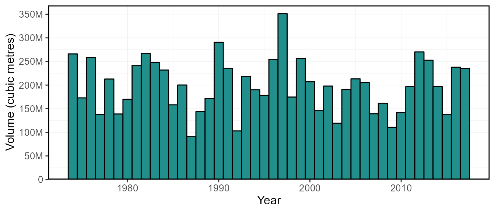
7. Functions for Computing Analyses
There are several functions that provide more in-depth analyses. These functions being with compute_ instead of calc_ and typically produce more than just a tibble data frame of statistics, like the calc_ functions. Most of these produce a list of objects, consisting of both tibbles and plots. There are three groups of analysis functions: annual trending, annual volume frequency analyses, and a full analysis (of most ‘fasstr’ functions). There is a separate vignette for each analysis type to provide more information.
Annual Trending Analysis
The compute_annual_trends() function calculates prewhitened non-parametric annual trends on streamflow data using the ‘zyp’ package. The function calculates various annual metrics using the calc_all_annual_stats() function and then calculates and plots the trending data. The magnitude of trends is first computed using the Theil-Sen approach. Depending on the selected method, either "zhang" or "yuepilon", the trends are adjusted for autocorrelation and then a Mann-Kendall test for trend is applied to the series. See the ‘zyp’ package and the trending vignette for more information on the analysis.
The compute_annual_trends() function outputs several objects in a list:
- $Annual_Trends_Data - a tibble of annual data from the
calc_all_annual_stats()function used for trending - $Annual_Trends_Results - a tibble of annual trending results
- $Annual_* - a ‘ggplot2’ object for every annual statistic trended, with the slope plotted if an alpha value is chosen using the
zyp_alphaargument (ex.zyp_alpha = 0.05).
Annual Volume Frequency Analysis
There are four ‘fasstr’ functions that perform volume frequency analyses on annual low-flow or high-flow data. The analysis follows the volume frequency analysis methods as used in the U.S. Army Corps of Engineers Statistical Software Package (HEC-SSP). The analyses produce plotting of annual series and quantiles fitted from various distributions. See the frequency analysis vignette for more information.
The compute_annual_frequencies() performs an annual daily (or rolling mean) low-flow (by default) or high-flow (using use_max = TRUE argument) frequency analysis on annual series. This analysis uses the daily mean lows or highs. The compute_hydat_peak_frequencies() function performs an annual instantaneous low (by default) or high peak frequency analysis. The “data” argument cannot be used for the HYDAT peak analysis. Both functions output several object in a list:
- $Freq_Analysis_Data - Tibble of computed annual minimums (or maximums)
- $Freq_Plot_Data - Tibble of plotting coordinates used in the frequency plot
- $Freq_Plot - ‘ggplot2’ object of the frequency plot
- $Freq_Fitting - List of fitted objects to fit the quantiles
- $Freq_Fitted_Quantiles - Tibble with fitted quantiles.
The compute_frequency_quantile() function performs annual daily (or rolling mean) low-flow (by default) or high-flow (using use_max = TRUE argument) frequency analysis on annual series but only returns the fitted quantile based on the selected return period. Both the numeric arguments “roll_days” and “return_period” are required. It results in a single value. For example, supplying roll_days = 7 and return_period = 10 to the function with a dataset will return the 7-day low-flow with a 10-year return period (i.e. 7Q10).
To compute a volume frequency analysis on custom data, use the compute_frequency_analysis() function. The data points to be used in the analysis must be provided in a data frame with a column of events (or years), the flow values (values), and the measure (or the type of value it is, “7-day lows”, for example. All other data filtering options are not included.
Full Analysis
If desired, a suite of ‘fasstr’ functions can be computed using the compute_full_analysis(), producing lists of tables and plots organized in lists by time periods and analysis type. All the objects can also be written into a directory by using the write_full_analysis(). The filetypes of plots and tables can be set using the plot_filetype and table_filetype arguments, respectively. See the full analysis vignette for more information.
The plots and tables are grouped into the following analyses:
- Screening
- Long-term
- Annual
- Monthly
- Daily
- Annual Trends
- Low-flow Frequencies
8. Customizing Functions with Arguments - Data Filtering and Options
Customizing how data is filtered and analyzed in the ‘fasstr’ functions provides great flexibility in their use. Described here are some of the options available in ‘fasstr’ functions. Not all functions have all these options so please see the documentation for each function to see which argument options are available (ex. ?calc_annual_stats).
Handling Missing Dates
Most functions will automatically (ignore_missing = FALSE) not calculate a statistic for a given period (a year or month or day of year, for example) if there is a date with missing data (NA value) and will result in an NA value or will not plot (base na.rm = FALSE). For example, if there at least one missing day for a given year, an annual statistic will not be calculated for that year. A warning message will appear in the console indicating as such. See the following code for an example with missing dates:
calc_annual_stats(station_number = "08NM116")
If you want to calculate the statistics regardless of missing dates, use the ignore_missing = TRUE argument. Otherwise you may need to filter for complete data years (see the screen_flow_data() function).
calc_annual_stats(station_number = "08NM116", ignore_missing = TRUE)
Dates Filtering
There are several options in the function that allow you choose your year type (i.e. start and end months) and to filter for specific time periods. If there is a specific period, years or months, to be analyzed there are several options to customize the data supplied. While filtering of data can be done to your flow data set before supplying it to a function (using ‘dplyr’ filtering, for example), these options provide quick solutions for filtering.
Water year and start month
By default, the functions will analyze/group/filter data by calendar years (Jan-Dec). However, some analyses require use of water years (the start of a year when precipitation begins to recharge surface and groundwater water reserves, thereby reducing the potential for double-counting high or low flow events that may occur in late December into January). If use of water years is desired, then set water_year_start with a month other than 1. The water year is designated by the calendar year in which it ends. For example, a water year from Oct 2000 to Sep 2001 would be the water year 2001.
Example of a default water year, starting in October:
calc_annual_stats(station_number = "08NM116", ignore_missing = TRUE, water_year_start = 9)
Example of a water year starting in August:
calc_annual_stats(station_number = "08NM116", ignore_missing = TRUE, water_year_start = 8)
Selecting and excluding years
To specify select years used in your analysis, the start_year and end_year arguments (providing a single value) can constrain the years. Using the exclude_years argument (providing a single or vector of years) will allow you to remove certain years from the analysis. Leaving these arguments blank will include all years in the dataset for the analysis.
Example of filtering for start and end years:
calc_annual_stats(station_number = "08NM116", start_year = 1980, end_year = 2010)
Examples of removing certain years (outliers, bad data, etc) using exclude_years:
calc_annual_stats(station_number = "08NM116", start_year = 1980, end_year = 2010, exclude_years = 1982)
calc_annual_stats(station_number = "08NM116", start_year = 1980, end_year = 2010, exclude_years = c(1982:1984))
Complete Years
If your data has missing dates, but you would like to use only those years with complete data, some functions utilize the complete_years argument where the data will automatically be filtered for years with complete data and statistics will be calculated. The following code will only calculate the long-term statistics with years of complete data.
calc_longterm_daily_stats(station_number = "08NM116", complete_years = TRUE)
Some functions, like below, require years with complete data, so years with missing dates will be ignored:
calc_annual_flow_timing(station_number = "08NM116")
Selecting for months
Some functions allow you to specify select months used in your analysis, using the months argument. By providing a vector of months (1 through 12) only those months will be used in an analysis. For example, using the months argument with the calc_annual_stats() function will calculate the annual statistics for only those months listed; so if summer statistics are required you can supply months = 6:8 to the function to filter it. Leaving this arguments blank will include all months in the dataset for the analysis.
Example of filtering for months June through August:
calc_annual_stats(station_number = "08NM116", start_year = 1980, end_year = 2010, months = 6:8)
A few functions, including the calc_longterm_daily_stats(), plot_longterm_daily_stats(), and plot_flow_duration() functions will allow you to add a customized time period to your data frame or plot. Using the custom_months argument you can list a vector of months (numeric 1:12). By default the data will be labelled as “Custom-Months” but can be customized by providing a character string to the custom_months_label argument.
Example of custom months and labelling:
calc_longterm_daily_stats(station_number = "08NM116", start_year = 1980, end_year = 2010, custom_months = 6:8, custom_months_label = "Summer")
Rolling averages
Some functions allow you to specify analyzing the data using rolling mean data, as opposed to the daily means. For those functions with the roll_days and roll_align arguments, analyses will be computed on the daily mean by default (can leave them blank is so). If choosing to conduct an analysis on 7-day rolling means, you would set roll_days = 7. Some functions allow multiple rolling days to be provided (see function documentation). The roll_align argument determine the direction of the rolling mean: see the “Adding rolling means” portion in Section 4 to see how the roll_days and roll_align work together.
Example of a 7-day rolling mean analysis (single roll_day use):
calc_annual_stats(station_number = "08NM116", start_year = 1980, end_year = 2010, roll_days = 7)
Example of a 7- and 30-day rolling mean analysis (multiple roll_day use):
plot_annual_lowflows(station_number = "08NM116", start_year = 1980, end_year = 2010, roll_days = c(7,30))[[1]]
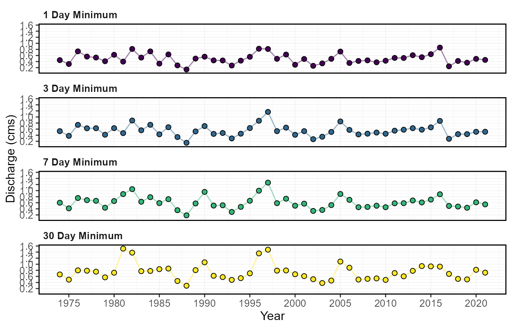
Percentiles and other statistics
Each ‘fasstr’ function comes with their default statistics to be calculated. While some cannot be changed (some plotting functions), most have the ability to customize what is calculated. Look up the default settings for each function in their documentation (?calc_longterm_daily_stats for example).
By default, the basic summary statistics functions will calculate the mean, median, maximum, and minimum values for each time period; these will automatically be calculated can cannot be removed by an argument option (can remove afterwards if necessary). These functions also calculate default percentiles, which can be customized by changing the desired percentiles by providing a numeric vector of numbers (between 0 and 100) to the percentiles argument.
This example shows the default percentiles for the calc_annual_stats() function (10 and 90th percentiles):
calc_annual_stats(station_number = "08NM116", start_year = 1980, end_year = 2010)
This example shows custom percentiles for the calc_annual_stats() function (5 and 25th percentiles):
calc_annual_stats(station_number = "08NM116", start_year = 1980, end_year = 2010, percentiles = c(5,25))
The following are some examples of how to customize results from other types of functions. See function documentations for full argument uses.
Example of calculating dates of the 10 and 20 percent of total annual flow:
calc_annual_flow_timing(station_number = "08NM116", start_year = 1980, end_year = 2010, percent_total = c(10,20))
Example of plotting the number of days per years outside of the 10th and 90th percentiles (25th and 75th percentiles are default):
plot_annual_outside_normal(station_number = "08NM116", start_year = 1980, end_year = 2010, normal_percentiles = c(10,90))
$Annual_Days_Outside_Normal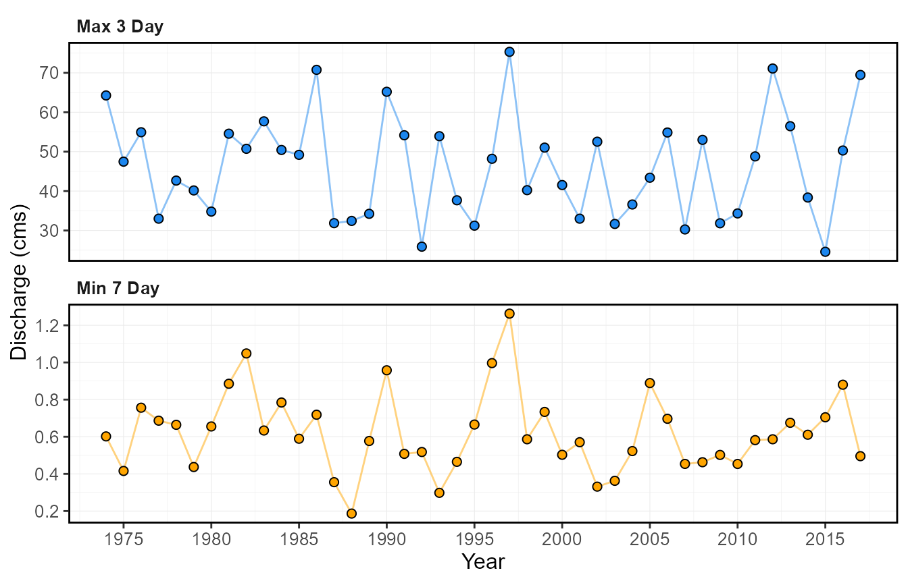
Data frame options
An option when working with the functions that produce data frames is to transpose the rows and columns of the data. Most functions by default provide data results such there are columns of statistics for each station and time period. See the example here:
calc_longterm_daily_stats(station_number = "08NM116", start_year = 1980, end_year = 2010)
# A tibble: 13 x 8
STATION_NUMBER Month Mean Median Maximum Minimum P10 P90
<chr> <fct> <dbl> <dbl> <dbl> <dbl> <dbl> <dbl>
1 08NM116 Jan 1.20 0.965 9.5 0.160 0.548 1.85
2 08NM116 Feb 1.15 0.968 4.41 0.140 0.489 1.97
3 08NM116 Mar 1.82 1.38 9.86 0.380 0.720 3.70
4 08NM116 Apr 8.33 6.22 37.9 0.505 1.54 17.8
5 08NM116 May 23.6 20.9 74.4 3.83 9.37 40.8
6 08NM116 Jun 21.3 19.4 84.5 0.450 6.10 38.6
7 08NM116 Jul 6.42 3.94 54.5 0.332 1.02 14.7
8 08NM116 Aug 2.11 1.57 13.3 0.427 0.779 4.21
9 08NM116 Sep 2.21 1.62 14.6 0.364 0.740 4.35
10 08NM116 Oct 2.10 1.65 15.2 0.267 0.803 3.95
11 08NM116 Nov 2.02 1.71 11.7 0.260 0.562 3.78
12 08NM116 Dec 1.31 1.08 7.30 0.342 0.5 2.37
13 08NM116 Long-term 6.14 1.89 84.5 0.140 0.685 19.3 In some circumstance, however, it may be more convenient to wrangle the data such that there are columns for stations (or groupings) and a single column with all statistics, and then the values are placed in columns for each respective time period. See the following example when setting transpose = TRUE.
calc_longterm_daily_stats(station_number = "08NM116", start_year = 1980, end_year = 2010, transpose = TRUE)
# A tibble: 6 x 15
STATION_NUMBER Statistic Jan Feb Mar Apr May Jun Jul Aug
<chr> <fct> <dbl> <dbl> <dbl> <dbl> <dbl> <dbl> <dbl> <dbl>
1 08NM116 Mean 1.20 1.15 1.82 8.33 23.6 21.3 6.42 2.11
2 08NM116 Median 0.965 0.968 1.38 6.22 20.9 19.4 3.94 1.57
3 08NM116 Maximum 9.5 4.41 9.86 37.9 74.4 84.5 54.5 13.3
4 08NM116 Minimum 0.160 0.140 0.380 0.505 3.83 0.450 0.332 0.427
5 08NM116 P10 0.548 0.489 0.720 1.54 9.37 6.10 1.02 0.779
6 08NM116 P90 1.85 1.97 3.70 17.8 40.8 38.6 14.7 4.21
# ... with 5 more variables: Sep <dbl>, Oct <dbl>, Nov <dbl>, Dec <dbl>,
# `Long-term` <dbl>Plot options
Logarithmic discharge scale
Example of plotting with a linear scale (default log_discharge = FALSE):
plot_annual_stats(station_number = "08NM116", start_year = 1980, end_year = 2010)
$Annual_Statistics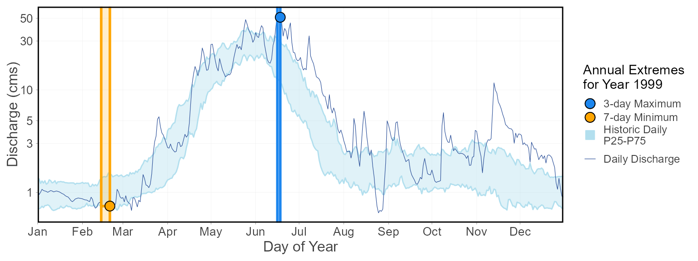
Example of plotting with a logarithmic scale (default log_discharge = TRUE):
plot_annual_stats(station_number = "08NM116", start_year = 1980, end_year = 2010, log_discharge = TRUE)
$Annual_Statistics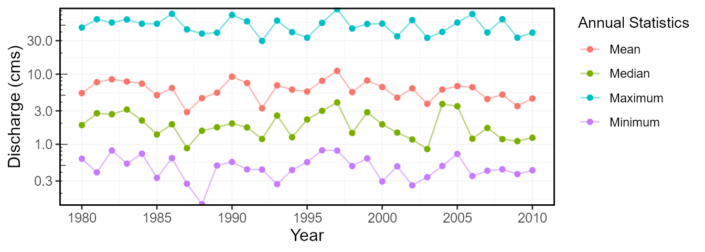
Including a standard title on the plot
The logical include_title argument adds the station number (or grouping), and in some cases the statistics as well. The argument’s default is FALSE.
Example of including a title when plotting (include_title = TRUE):
plot_annual_stats(station_number = "08NM116", start_year = 1980, end_year = 2010, include_title = TRUE)
$Annual_Statistics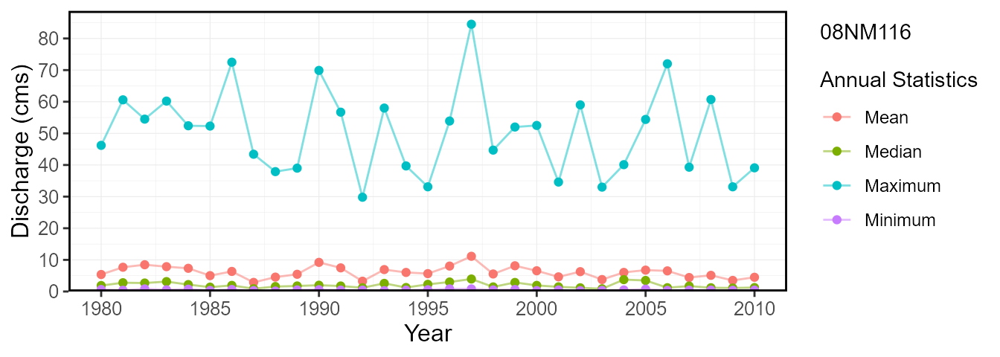
Example of including a title when plotting (include_title = TRUE) where the statistic is also displayed:
plot_monthly_stats(station_number = "08NM116", start_year = 1980, end_year = 2010, include_title = TRUE)[[1]]
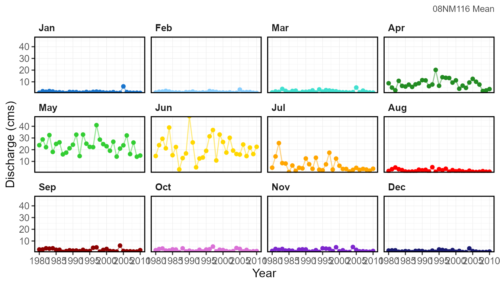
Customizing a plot by using additional ‘ggplot2’ functions:
library(ggplot2) # Create the plot list and extract the plot using [[1]] plot <- plot_daily_stats(station_number = "08NM116", start_year = 1980)[[1]] # Customize the plot with various 'ggplot2' functions plot + geom_hline(yintercept = 1.5, colour = "red", linetype = 2, size = 1) + geom_vline(xintercept = as.Date("1900-03-01"), colour = "darkgray", linetype = 1, size = 0.5) + geom_vline(xintercept = as.Date("1900-08-05"), colour = "darkgray", linetype = 1, size = 0.5) + ggtitle("Mission Creek Annual Hydrograph") + ylab("Flow (cms)")
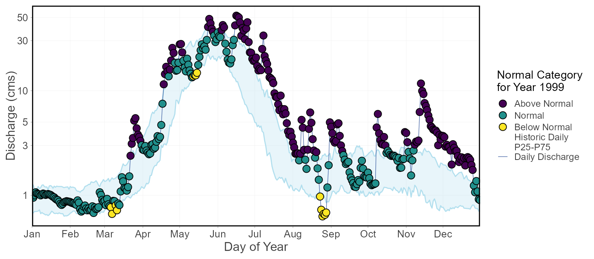
9. Writing Tables and Plots
To support saving the ‘fasstr’ tables and plots to a directory, there are several functions included in this package. These include the following:
-
write_flow_data()- write a streamflow dataset as a .xlsx, .xls, or .csv file -
write_results()- write a data frame as a .xlsx, .xls, or .csv file -
write_plots()- write plots from a list into a directory or PDF document -
write_objects_list()- write all tables and plots contained in a list
Writing a flow dataset
To directly save a streamflow dataset from HYDAT or your own custom dataset onto your computer, you can use the write_flow_data() function. By listing the station_number or data data frame, the dataset will save a file into the working directory, unless other wise specified using the file_name argument. If using the station_number argument and listing only one station without listing a name with file_name, the name will include the number and followed by "_daily_data.xlsx“; and if multiple stations are listed the name will be”HYDAT_daily_data.xlsx“. When using the data argument without listing a name with file_name the default name will be fasstr_daily_data.xlsx. To use another file type than”xlsx" (options are “xlsx”, “xls”, or “csv”) provide a file name using the file_name argument with the desired extension. Other argument options for this function include:
- selecting for the start and end years, or start and end dates
- choosing to use water years when selecting specific years
- selecting whether or not to fill dates with missing data with NA’s (logical
fill_missingargument) - selecting the number of digits to round the flow values (numeric
digitsargument)
The following will write an “xlsx” file called “08NM116_data_data.xlsx” into your working directory that includes all daily flow data from that station in HYDAT:
write_flow_data(station_number = "08NM116")
The following is an example of possible customization:
write_flow_data(station_number = "08NM116",
start_year = 1960,
end_year = 1970
fill_missing = TRUE,
file_name = "mission_creek.csv")Writing a data frame
While you can use the base R write_csv() or writexl package functions to save your data, the package provides a function with options to choose for file type and the rounding of digits. To directly save a data frame onto your computer you can use the write_results() function. This function allows you to decide on file extensions of “xlsx”, “xls”, or “csv” by including it in the file_name argument when you name the file. This function also allows you to round all numeric columns by selecting the number of digits using the numeric digits argument.
annual_data <- calc_annual_stats(station_number = "08NM116") write_results(data = annual_data, digits = 3, file_name = "mission_creek_annual_flows.xlsx")
Writing a list of plots
As all plots produced with this package are contained within lists, a function is provided to assist in saving a list of plots into either a folder, where all plot files are named by the object names within the list, or combined PDF document, using the write_plots() function. The name of the folder or combined PDF document is provided using the folder_name argument. If the folder does not exist, one will be created. Options to customize output size with width, height, units and dpi arguments, as similar to those in ggplots2:ggsave() can also be used.
The following will save each annual plot as a “png” file in a folder called “Annual Plots” in the working directory:
annual_plots <- plot_annual_stats(station_number = c("08NM116","08NM242")) write_plots(plots = annual_data, folder_name = "Annual Plots", plot_filetype = "png")
The following will save all annual plots as combined “pdf” document called “Annual Plots” in the working directory with each plot on a different page:
annual_plots <- plot_annual_stats(station_number = c("08NM116","08NM242")) write_plots(plots = annual_data, folder_name = "Annual Plots", combined_pdf = TRUE)
If you would prefer to save the plots using other functions, like the ggplot2::ggsave() function, the desired plot must subsetted from the list first so the object provided the function is a plot object and not a list.Individual plots can be subsetted from their lists using either the dollar sign, $ (e.g. one_plot <- plots$plotname), or double square brackets, [ ] (e.g. one_plot <- plots[[plotname]] or one_plot <- plots[[1]]).
Writing a list of data frames and plots
As some objects produced with this package, mainly with the compute_* functions, are a list of both data frame and ‘ggplot2’ objects, a function is provided to assist in saving all objects within the list into a designated directory folder, where all table and plot files are named by the object names within the list using the write_objects_list() function. The name of the folder is provided using the folder_name argument. If the folder does not exist, one will be created. The file type for tables and plots are chosen using the table_filetype and plot_filetype arguments respectively. There are also options to customize plot output size with width, height, units and dpi arguments, as similar to those in ggplots2:ggsave() can also be used.
The following will save all plots and tables in a folder called “Frequency Analysis” in the working directory:
freq_analysis <- compute_annual_frequencies(station_number = "08NM116") write_objects_list(list = freq_analysis, folder_name = "Frequency Analysis", plot_filetype = "png", table_filetype = "xlsx")